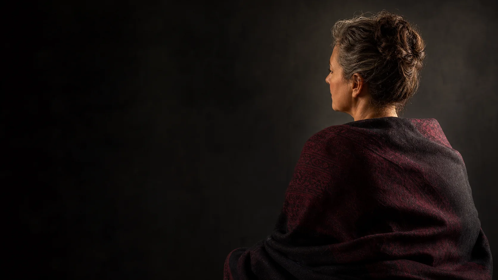
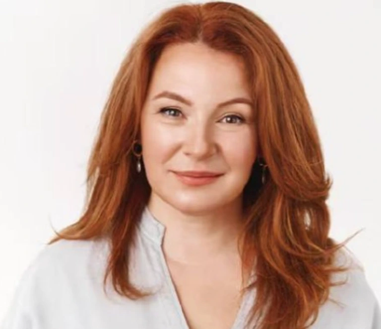
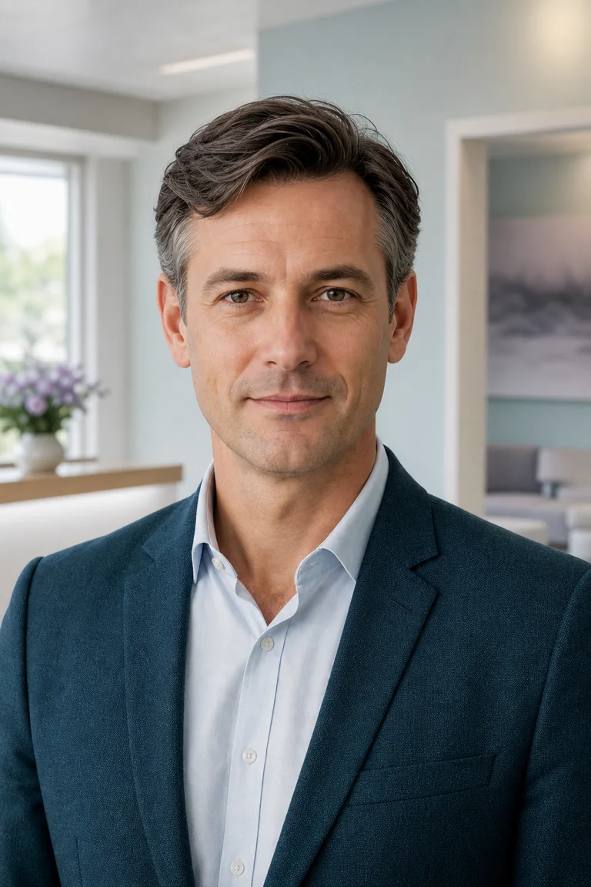

Независимый центр · Вена, Австрия
После общения с экстрасенсом стало хуже?
Разбираем последствия без запугивания и обесценивания. После первичного разговора предлагаем один из двух маршрутов: восстановление с биоэнергетиком или юридическую оценку материального ущерба. Нейропсихолог и врач подключаются, только если состояние требует профессиональной проверки.
- 02основных
направления - SAFEбез запугивания
и обесценивания - ONLINEпервичный разбор
дистанционно

Два направления центраМаршрут выбирается по ситуации
01Восстановление состояниябиоэнергетик · стабилизация · персональный планЭНЕРГИЯ
02Материальный ущербдоказательства · банк · претензия · защитаПРАВО
ПоддержкаНейропсихолог и врач проверяют риски при необходимости
После первичного разговораНе ведём каждого по одному сценариюПродолжение зависит от реальной задачи человека.
Кто мы и зачем нужен центр
Не спорим о прошлом.
Помогаем выбрать, что делать дальше.
К нам обращаются после прогнозов, ритуалов, «чисток», разговоров о порче и повторных платежей. Мы не называем другого человека мошенником без проверки и не заставляем верить в одну версию произошедшего. Наша задача — определить полезное продолжение.
Если человек хочет работать с состоянием
Восстановление с биоэнергетиком
Специалист разбирает, что изменилось после эзотерического опыта, помогает стабилизировать внутреннее состояние и формирует ограниченный персональный план без запугивания и зависимости от бесконечных сеансов.
- карта изменений
- восстановительные практики
- понятные границы работы
Если человеку нанесён материальный ущерб
Юридический разбор и маршрут возврата
Отдельный отдел проверяет платежи, обещания, давление и переписку. Человек получает оценку доказательств и реальных способов защиты без заранее гарантированного возврата.
- карта платежей
- реестр доказательств
- варианты правовой защиты
Медицинская экспертиза — поддержка, а не главный продукт центра
НейропсихологияПсихическое состояниеКрасные флагиИИ-анализВрач по показаниямС какими ситуациями обращаются
Центр видит не один симптом,
а всю историю целиком
Важно не доказать чужое воздействие, а спокойно зафиксировать, что человек услышал, что сделал после этого, как изменилось состояние и возник ли материальный ущерб.
Негативный прогноз или запугивание
После слов о порче, опасности для семьи, «закрытых дорогах» или срочной необходимости продолжать работу появился постоянный страх.
Биоэнергетик · нейропсихологПосле ритуала или «чистки» стало хуже
Пропал ресурс, нарушился сон, появилась тяжесть, тревога или ощущение, будто человек перестал быть собой.
Биоэнергетик · координаторИстощение, тревога и потеря опоры
Сложно сосредоточиться, принимать решения, оставаться одному или вернуться к привычной жизни.
Нейропсихолог · врач по показаниямДавление на новые сеансы и платежи
Каждая встреча открывает новую угрозу, а отказ от следующего перевода связывают с ухудшением состояния.
Юрист · специалист по доказательствамЗависимость от мнения эзотерика
Человек боится действовать без очередного прогноза, сомневается в себе и не понимает, где заканчивается помощь и начинается контроль.
Биоэнергетик · нейропсихологМатериальный ущерб
Деньги переводились частями, разными способами или под давлением, а обещанный результат не наступил и возврат отклоняют.
Юридический отделПочему центр выглядит профессионально
Не смешиваем ощущения,
медицинские риски и доказательства.
Контекст
Что произошло до изменений
Контакт с эзотериком, прогноз, ритуал, «чистка», давление, повторные сеансы или другое событие, после которого состояние стало иным.
Энергетика
Ресурс и ощущение воздействия
Субъективные ощущения, внутреннее напряжение, чувство чужого влияния и безопасные восстановительные практики без запугивания.
Состояние
Психика, сон и нервная система
Тревога, память, восприятие, мышление, сон, физические симптомы и медицинские риски рассматриваются независимо.
Защита
Платежи, давление и доказательства
Юридический отдел проверяет факты, способы оплаты, обещания и реальные варианты защиты при финансовом ущербе.
Кто стоит за центром
Основная команда сопровождения
Маршрут восстановления ведёт один из биоэнергетиков, а координатор остаётся единой точкой связи. Нейропсихолог, врач, психотерапевт и специалист по медицинскому ИИ подключаются только тогда, когда их оценка действительно нужна.
BIOОсновное направление центра

Elena Weiss
Биоэнергетик и специалист по восстановлению состояния
Работает с ощущением чужого влияния, потерей внутреннего ресурса и изменениями после ритуалов, прогнозов или общения с другим эзотериком.
- Фокус
- ощущение чужого влияния, истощение, страх, внутреннее напряжение
- Результат
- безопасный план восстановления без запугивания и зависимости от сеансов
BIO IIВосстановительные практики

Валерий Левин
Биоэнергетик и специалист по восстановительным практикам
Работает с длительным истощением, внутренним напряжением и потерей опоры после эзотерических консультаций. Помогает выстроить спокойный дистанционный режим практик.
- Фокус
- истощение, нарушения сна, телесное напряжение, возвращение устойчивости
- Результат
- ограниченный по срокам план практик и понятные критерии завершения работы
CASEКоординация ситуации

Martin Falk
Координатор центра
Проводит первичный разговор, фиксирует последовательность событий и помогает определить, какое из двух направлений действительно отвечает задаче человека.
- Фокус
- хронология, главная проблема, срочность, ожидаемый результат
- Результат
- понятный маршрут без навязывания всей команды
NEUМедицинская оценка по показаниям
Lukas Hartmann
Врач-невролог
Оценивает симптомы, анамнез, неврологические риски, лекарственный контекст и необходимость очного обследования.
- Фокус
- головная боль, головокружение, чувствительность, движения, память
- Результат
- неврологическая гипотеза и маршрут обследований
NPSКогнитивные функции
Claudia Neumann
Клинический нейропсихолог
Исследует, как работают внимание, память, речь, мышление, исполнительные и зрительно-пространственные функции.
- Фокус
- профиль сильных и нарушенных когнитивных функций
- Результат
- нейропсихологическое заключение и клиническая интерпретация
PTПсихотерапевтическая диагностика
Sophie Keller
Психологический психотерапевт
Оценивает механизмы тревоги, стрессовые реакции, поведенческие паттерны и сохранность повседневного функционирования.
- Фокус
- эмоциональная регуляция, избегание, реакции на стресс
- Результат
- психологическая формулировка случая и цели помощи
AIDigital health
Daniel Krüger
Специалист по медицинскому ИИ
Структурирует большие массивы медицинских данных, контролирует качество цифрового анализа и объяснимость результата.
- Фокус
- хронология, медицинские документы, тесты, сопоставление данных
- Результат
- подготовленная для врача аналитическая карта и контроль ограничений
Второе основное направление
Отдельный юридический отдел
Если человеку нанесён материальный ущерб, работа с состоянием не подменяет правовую защиту. Юристы отдельно собирают доказательства, проверяют платежи и оценивают реальные варианты возврата.
Правовой разбор ситуации
Не обещаем «вернуть всё». Определяем, что действительно можно сделать.
Проверяем платежи, переписку, обещания, давление и данные получателей. После разбора человек понимает возможные маршруты, ограничения, риски и первые действия.
Посмотреть маршрут возвратаПлатили за консультации, ритуалы или программы
Особенно если результат гарантировали, условия менялись, а платежи требовали повторять.
На вас давили или запугивали
Сообщали об угрозе, «блокировке», срочном обряде или последствиях отказа от нового платежа.
Отказываются возвращать деньги
Услуга не оказана, содержание не соответствует обещаниям или исполнитель перестал отвечать.
Платежи ушли разными способами
Карта, банковский перевод, электронный кошелёк, платёжный сервис или криптовалюта.
Пять задач · один координатор
К делу подключается не «универсальный юрист», а нужная комбинация экспертизы
J-01Стратегия
Руководитель юридического отдела
Определяет предмет спора, применимое право, последовательность действий и необходимость привлечения адвоката в конкретной юрисдикции.
- Вход
- полная хронология ситуации
- Результат
- единая правовая стратегия
J-02Защита потребителя
Юрист по договорным и потребительским спорам
Сопоставляет обещания, условия оказания услуги, фактический результат, отказ от договора и основания для требований.
- Фокус
- оферта, услуга, переписка, возврат
- Результат
- позиция и проект претензии
J-03Платежи
Специалист по банковским и платёжным спорам
Строит карту транзакций и проверяет, какие обращения возможны в банк, платёжный сервис или к получателю средств.
- Фокус
- карты, IBAN, кошельки, эквайринг
- Результат
- платёжный маршрут и сроки действий
J-04Digital evidence
Специалист по цифровым доказательствам
Систематизирует переписку, страницы, рекламу, номера телефонов, аккаунты, чеки и технические данные без изменения оригиналов.
- Фокус
- фиксация и связь материалов
- Результат
- реестр доказательств
J-05Cross-border
Юрист по трансграничным обращениям
Проверяет, где зарегистрирован получатель, какая страна и орган могут рассматривать спор и нужен ли местный представитель.
- Фокус
- Австрия, ЕС и иностранные получатели
- Результат
- юрисдикция и адресаты обращений
До начала правовой работы человек получает понятную зону ответственности специалиста. Представительство и окончательную правовую позицию ведёт только специалист с соответствующим профессиональным статусом в нужной юрисдикции; условия фиксируются отдельно.
Воронка правового разбора
От хаотичной истории — к понятному плану действий
- 01Собираем исходные данныеХронология
Фиксируем историю без потери деталей
Кто связался, что обещал, как менялись условия, какие суммы и когда были перечислены.
- 02Сохраняем доказательстваРеестр
Переписка, чеки и страницы становятся единым досье
Оригиналы файлов, ссылки, аккаунты, рекламные сообщения, номера и платёжные документы.
- 03Проверяем участниковКарта связей
Определяем получателя, основание платежа и юрисдикцию
Отделяем публичный образ или псевдоним от юридического лица, счёта и фактического адресата средств.
- 04Сравниваем маршрутыВарианты
Банк, платёжный сервис, претензия, полиция или регулятор
Каждый вариант оценивается по срокам, доказательствам, стоимости и вероятному практическому результату.
- 05Формируем решениеПлан
Вы получаете письменную карту следующих действий
Что делать сразу, какие документы подготовить, куда обращаться и когда дальнейшие расходы нецелесообразны.
Возможные направления
Маршрут зависит от способа платежа и доказательств
Банк или платёжный сервис
Проверка возможности отзыва, оспаривания операции или обращения по процедуре провайдера.
Претензионная работа
Формулирование требований к исполнителю или получателю средств на основе документов и применимого права.
Полиция или регулятор
Подготовка структурированного комплекта материалов, если имеются признаки правонарушения.
Судебная оценка
Предварительная проверка подсудности, стоимости, сроков и экономического смысла дальнейшего процесса.
Результат первичного разбора
Не обещание возврата, а проверяемая правовая карта
- хронология и карта платежей
- перечень сохранённых доказательств
- возможные адресаты обращений
- риски, сроки и ограничения
- последовательность следующих действий
Иногда правильный вывод — не начинать дорогое производство. Центр не гарантирует возврат и не называет лицо нарушителем до правовой оценки фактов.
Медицинский наклон центра
Медицина помогает не пропустить риск — но не является главным оффером
Нейропсихолог и врач подключаются, когда после эзотерического опыта изменились сон, память, поведение, восприятие или физическое самочувствие. Это дополнительный экспертный слой, а не обязательный пакет обследований.
Нейропсихологический профиль
Внимание, память, мышление и способность принимать решения оцениваются, если изменения мешают повседневной жизни.
Сон, тревога и восприятие
Специалист проверяет, насколько выражены изменения и требуется ли отдельная психологическая или медицинская помощь.
Медицинские красные флаги
Центр не объясняет энергетикой симптомы, при которых человеку нужна срочная либо очная медицинская оценка.
Документы и ИИ-анализ
ИИ помогает собрать хронологию и обнаружить пропуски, но не подтверждает воздействие и не принимает медицинских решений.
Очный врач — только по показаниям
Если дистанционный формат недостаточен, человек получает понятную рекомендацию обратиться к профильному специалисту на месте.
Как работает центр
От сложной истории —
к понятному маршруту
Сайт не собирает заявку. После первого звонка координатор понимает основную цель человека и предлагает один из двух маршрутов. Медицинские специалисты не становятся обязательным промежуточным этапом.
- 01Первичный разговорВХОД
Фиксируем, что произошло и чего человек хочет сейчас
Восстановить внутреннее состояние, остановить зависимость от чужих сеансов, оценить ущерб или разобраться сразу с двумя задачами.
- 02Выбор целиВЫБОР
Определяем главный маршрут без навязывания всей команды
Координатор объясняет различия между работой биоэнергетика и юридическим отделом, а человек понимает ожидаемый результат каждого направления.
- 03Основная работаМАРШРУТ
Начинается восстановление или правовой разбор
Биоэнергетик работает с состоянием и ресурсом. Юристы работают с платежами, перепиской, доказательствами и адресатами обращений.
- 04Экспертная поддержкаПРОВЕРКА
Медицина подключается только при реальной необходимости
Нейропсихолог или врач оценивает тревожные изменения, риски и границы дистанционной работы, не вмешиваясь в юридическую часть.
- 05РезультатПЛАН
Человек получает понятное продолжение
План восстановления, правовую карту либо согласованную последовательность двух независимых направлений.
Результат центра
Не обещание чуда.
Понятный следующий шаг.
Сайт подтверждает, что за разговором стоит не один консультант, а центр с разделёнными ролями, ответственным координатором, биоэнергетическим направлением, медицинской экспертизой и отдельным юридическим отделом.
Выбранный маршрут
Человек понимает, кто будет работать с ситуацией и какой результат можно ожидать.
План восстановления
Ограниченная по объёму работа с биоэнергетиком без запугивания и бесконечных сеансов.
Юридическая карта
Доказательства, платежи, возможные адресаты обращений, ограничения и следующие действия.
Проверка рисков
Понимание, когда достаточно дистанционной работы, а когда требуется нейропсихолог или врач.
Основания для доверия
Не громкие обещания,
а понятные границы
Эзотерическая аудитория не должна сталкиваться с обесцениванием, а медицинские и юридические решения не должны подменяться энергетическими объяснениями.
Без магических диагнозов
Ощущение воздействия принимается всерьёз, но не выдаётся за доказанный сверхъестественный факт.
Право на практику
Медицинские решения принимает только специалист с действующим профессиональным статусом.
Профильная квалификация
Врачебная специализация должна соответствовать заявленному медицинскому профилю.
Без гарантий результата
Ни очистка, ни лечение, ни возврат средств не обещаются до профессиональной оценки.
Конфиденциальность
Понятный регламент доступа к медицинским, личным и платёжным данным.
Разделение компетенций
Энергетик, нейропсихолог, врач и юрист отвечают только за свою часть маршрута.
Частые вопросы
До начала разбора
Сайт предназначен для спокойного ознакомления с устройством центра после первого контакта.
Можно обратиться только к биоэнергетику или только к юристам?+
Да. Это два самостоятельных направления. Медицинские специалисты не являются обязательной ступенью между первым разговором и выбранной работой.
Центр подтверждает порчу или магическое воздействие?+
Нет. Центр не ставит магических диагнозов. Мы принимаем описание человека без насмешки: биоэнергетик работает с субъективным состоянием, а врачи независимо оценивают медицинские факторы только при необходимости.
Что именно делает биоэнергетик?+
Фиксирует изменения после эзотерического опыта, работает с ощущением внутреннего ресурса и предлагает ограниченный план восстановительных практик без угроз и зависимости от продолжения сеансов.
Когда подключается медицинский специалист?+
Когда изменения сна, памяти, поведения, восприятия или физического самочувствия требуют профессиональной проверки либо выходят за границы дистанционного формата.
Юристы гарантируют возврат средств?+
Нет. Отдел оценивает доказательства, сроки, способ платежа и применимое право. Иногда правильный вывод — не начинать дорогое производство с низкой практической перспективой.
Можно ли пройти работу дистанционно?+
Первичный разговор, биоэнергетическое сопровождение, изучение документов и значительная часть юридического разбора могут проводиться дистанционно. Очный формат требуется только тогда, когда этого требует конкретный медицинский или правовой шаг.
Что подготовить к первому разбору?+
Краткую последовательность событий, описание изменений в состоянии и, если есть ущерб, платежи, переписку и обещания, которые давал специалист.
Перед первым разговором
Не доказывайте воздействие.
Опишите события по порядку.
- 01С кем общались и что происходило
- 02Что изменилось в состоянии и когда
- 03Были ли платежи, давление или угрозы
- 04Что вам нужно сейчас: восстановление, защита или оба направления
Контакты центра
Вена,
Австрия
Адрес и телефон для связи с центром. Перед визитом согласуйте формат обращения по телефону.
Адрес
Heiligenstädter Str. 55/65
1190 Wien, Австрия Открыть на карте → Телефон +43 1 360665000 Позвонить в центр →
1190 Wien, Австрия Открыть на карте → Телефон +43 1 360665000 Позвонить в центр →
Метка на картеHeiligenstädter Str. 55/65
1190 Wien, Австрия
Построить маршрут →
1190 Wien, Австрия